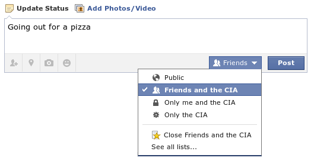

One of the most common beliefs about privacy is that consumers don't care for it. They don't mind the data collection and aren't worried about what's done with it. To them, the trade-off of giving up privacy in exchange for personalised services is either a neutral or a good thing. But do they really think that? Research point in a radically different direction.
I recently encountered a 2015 study from the University of Pennsylvania that discussed a survey on data collection. They asked participants to rate everyday trade-offs on a 5-point scale, for example "It's okay if a store where I shop uses information it has about me to create a picture of me that improves the services they provide for me." With a representative sample, they found that 58% of Americans are resigned to not having a say in what data is being collected and what happens to it. They feel powerless to do anything against it.
In fact, the findings went even further. 41% of Americans are not only resigned, they also believe that the data collected and used will hurt them in the long term. This comes with the researchers' argument that this is harmful for the democratised marketplace, where everybody can buy goods at a certain price and competition is equal. Due to categorisation and targeted advertisements, people may be funnelled into a personalised and unequal system.
Resigned about data collection
Maybe the most interesting conclusion was that the more people knew about data collection methods, the more they were resigned to be powerless against them. This is, unfortunately, all too true from my personal experience. A friend of mine works at a cybersecurity company. He recently commented that my privacy protection methods go as far, if not further, than some of his colleague's. And yet, I resign myself to the fact that I'm being identified online. And that my data is being collected without my explicit consent.
Last week, I linked to the Electronic Frontier Foundation's online tool Panopticlick. This tool shows you, among other things, how unique your browser is and ways to analyse it. This data can be stored on a server and thereby circumvents the Cookie Law. It's been around since at least 2009. During my research, it appears that it's possible, with 99,24% accuracy to identify users using different browsers on the same device with fingerprinting techniques. Although it's slightly less accurate than cookies, you can't stop it from happening.
And that's how the resignation kicks in. You're going to have to accept that some things are beyond your control. Sure, you could look for really technically complex solutions, but at some point you have to conclude that these methods are not worth the effort. The best you can do is to take your existing measures as far as you can and hope for the best.

The majority does care
We all know that one source doesn't mean much. In doing my due diligence, I found a summary of two 2015 surveys performed by the Pew Research Center. In the wake of the NSA revelations by Edward Snowden, they explored the issues of tracking and profiling.
Their findings are in line with the University of Pennsylvania's study, perhaps even more confronting. They found that 93% of Americans find that having control over who can get their information is important. And 90% argue that what information is collected about them is important. That's an incredible majority when you compare it with what's happening online.
It gets more interesting. Overall, they conclude that Americans put a lot of importance on being able to control what data is collected on them and on being able to share confidential data. That's something that's barely addressed in the other study, where they focus on resignation. There is always a reason to share that data. It's the fact that trust in the data processer has diminished that's problematic.
For me, privacy and security are really important.
— Larry Page, then CEO of Google
This claim can also be supported with their data. When it comes to trust, we see the same issues appear: There's very low confidence in that companies and governments keep your data private and secure. Online service providers are among the least trusted entities around, with advertising agencies taking the lead with 76% having no confidence in the privacy and security of the data they collect (7% was confident, 13% didn't know, the rest didn't answer).
What's interesting is that very few have acted to avoid the rampant data collection. To put it in numbers: 91% of users hadn't changed anything about their digital behaviour to avoid being tracked. A majority had taken some action to make data gathering more difficult, such as deleting browser history and cookies (59%) and not providing non-required information (57%), but these measures are barely scratching the surface.
A basic human right
There is a major underlying problem that isn't addressed in these studies: it's nigh impossible to live in this day and age without the internet. It has been one of the most successful innovations of the modern age and continues to enhance our daily lives. In fact, the United Nations declared internet access to be a basic human right in 2011, as it enables people to exercise their right of freedom of opinion and expression.
This clashes with the idea of resignation. With resignation you feel that everything you do on the internet is being tracked all the time. And that this data may come back to haunt you in the future. When people know they're being watched, they alter their behaviour. They stay within social confines, which means that they may not make that joke that may come off as offensive. Or they may not out their political opinions because it may backfire in the future. People tend to unknowingly conform to the behaviour the observers are expecting. That doesn't sound all too free to me.
Being secretly observed in an area where you should be able to express your own opinions means that we change our behaviour. We may hold back unpopular opinions not due to social pressure, but because it's being recorded and stored. Just look at what happened in Turkey, where a coup was used as a carte blanche to arrest dissidents. A lot of websites have been blocked, but you can be assured that online insults against the president will get you sued. One of the weirdest cases had a doctor lose his job after comparing president Erdogan and Gollum.
Resigning to data collection and speaking up for a state where privacy matters appear to be conflicting behaviours. Yet, as the use of these online services isn't as voluntarily as some might make you believe, that's the situation we live in today. I see it as driving a diesel car even though you may feel we need to take action against climate change. You could get rid of your car, but that may not be a realistic alternative.
I believe the solution lies in both lawmakers and the business world. Lawmakers can create legislation that enforces the belief of privacy as a human right, while businesses can capitalise on our desire for privacy by incorporating it in their business model. Right now, all you can do is alter your behaviour to feed the data monster as little as you can. Or turn off your devices and go offline, but we all know that's not really an option.


Enabling comments requires your consent for Disqus to place cookies. You can review their privacy policy here.